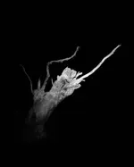

On the road between the two "cities" of rugged Tasmania, there is a farm on which isolated dead trees pepper the landscape. Everytime I drove by, they stared at me.
One random night I drove down to this farm with my camera and a construction light. I snuck my car off the road and, with an impish fear, hopped the farmer's fence. In mind was a ringing memory of being chased off a Tasmanian apple farm by a gun shot, not without reason.
Nearing the first tree, my sympathetic nervous system discharged. I froze like the grass under my boots. I was being stared at, by a dozen pairs of eyes, floating in darkness, blinking. Sheep.
Flushed with adrenaline I set up the light at the first tree and switched it on. Then nervously watched the farmer's house hoping his light didn't also switch on. Nothing. Lined up the shot, pressed the shutter. No click. Tried again. No click. Claw-like freezing fingers fiddled with the knobs and settings, breathing out profanity. At this rather strange moment, shivering on a farm at 1am with only creepy sheep and creepy trees as company, my camera broke.
Lucky I had my phone.